Home / Shading Rig / Advanced Usage
Setting up an effect gives you a circular effect, which is nice, but you probably will want more control and complexity fairly quickly. Each Effect can be customized to exactly what you need.

Parameters
You'll want to combine these parameters to create the effect you want, most effects require altering many of these parameters.
Elongation
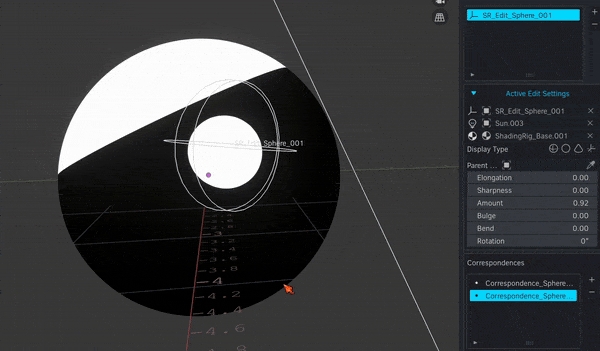 Elongation changes the width to height ratio of the Effect.
{kind=link}
Note
In the original paper, this is referred to as Anisotropy. However, it's not actually Anisotropy, and Elongation felt more accurate.
Sharpness
 Sharpness "puckers" the horizontal corners of the Effect, or draws them as sharp corners.
Sharpness "puckers" the horizontal corners of the Effect, or draws them as sharp corners.
Info
Positive Elongation combined with Sharpness creates a diamond shape.
Hardness
Hardness changes the way the Effect blends with other shading. An Hardness of 1 means the Effect will have hard edges and move like a decal. A lower hardness means the Effect will blend with the shading more, creating a smooth effect not unlike what you see with SDF modeling or metaballs. It's difficult to describe, so please compare and contrast what happens when this Effect is moved with an hardness of .1, .3, and 1:

For hard highlights or shadows, such as a "eyelight" (a highlight in the eyes), Rembrandt triangle, or an under-the-nose shadow, you will want a higher value. For more generalized shading, a lower value will work better.
Bulge
 Bulge thickens one end of the Effect, creating a pear-shaped effect.
Bulge thickens one end of the Effect, creating a pear-shaped effect.
Note
Bulge applies along a diagonal axis. You can use Rotation to correct this.
Bend
Bend thickens the effect similar to Bulge, but it applies on the opposite diagonal axis. 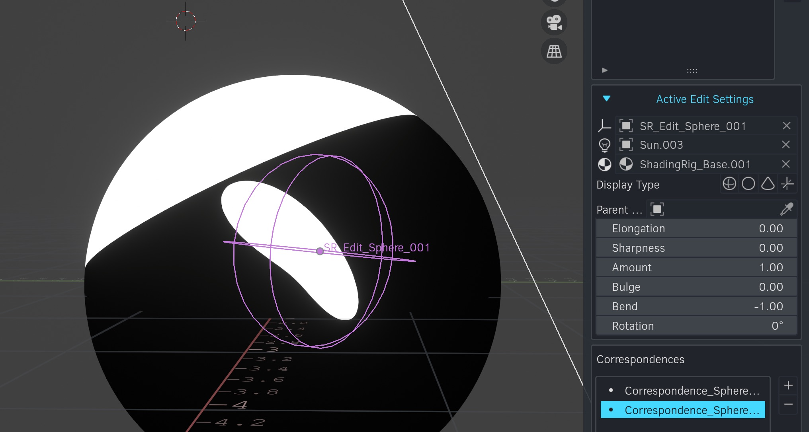 It's very difficult to explain Bulge and Bend, but they work well in combination to create a variety of effects. For example: 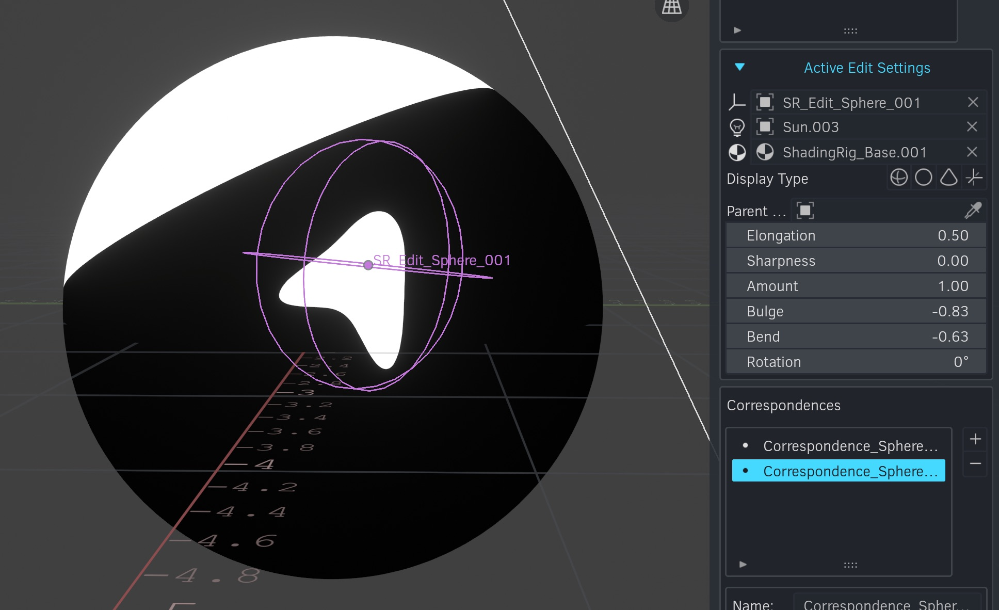
{kind=link}
{kind=link}
Mode
This changes how the Effect is combined with other shading. There are 5 modes:
-
Lighten (Default): The Effect is mixed in to the shading, adding to the lit area. See the Lighten equation here: Lighten Blend Mode (Wikipedia)
-
Subtract: The Effect is subtracted from the shading, removing lit areas. Where the Effect is light, the shading will be darkened. Where the Effect is dark, there will be no effect.
-
Multiply: The Effect is multiplied with the shading, darkening dark areas and not affecting light areas.
-
Darken: Similar to Multiply, but the opposite of Lighten. See the Darken equation here: Darken Blend Mode (Wikipedia)
-
Add: The Effect is added to the shading. Light areas will now be lightened greater than a 0-1 range. In practice, this brings in slightly more of the effect, especially along tight corners, than Lighten.
This example mainly shows the difference between Lighten and Add:
{kind=link}
This next example shows the different modes when Hardness is set to full 1.0 strength: 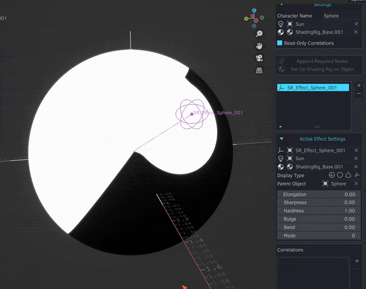
{kind=link}
Info
The correct mode for an Effect varies. For example, combining multiple Effects with Subtract or Add mode will generally give you an all black or all white result as values end up in some strange range like [-2,-1]. I recommend using Lighten and Multiply as your first choices, and experimenting with other modes as desired.
Clamping
When stacking multiple Effects, you will go outside of a normalized range of [0,1]. Clamping it constrains it to the [0,1] range. Clamping is turned on by default, since things behave more intuitively when it is turned on. You can toggle it per Effect with the Clamp checkbox.
Effect Rotation
The rotation of the empty has a major effect on the shape of the Effect.

If you're struggling to get the shape you want, try rotating the empty.
Note
Effect rotation is tied to correspondence, so you can vary the shape based on light rotation.
Presets
To help quickly get a desired effect, I've added some presets you can use. Note that these likely won't match the images below, as they're dependent on the form of the object. You'll need to tweak them, but they may be helpful starting points.
Bean
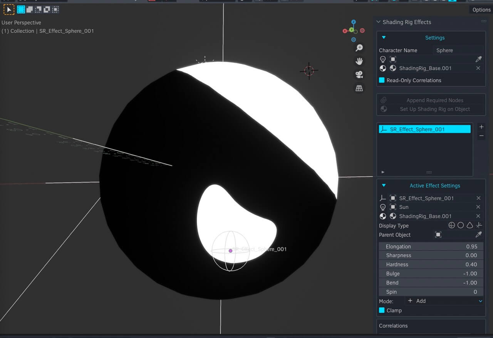 Useful for "pringling".
{kind=link}
Bowl
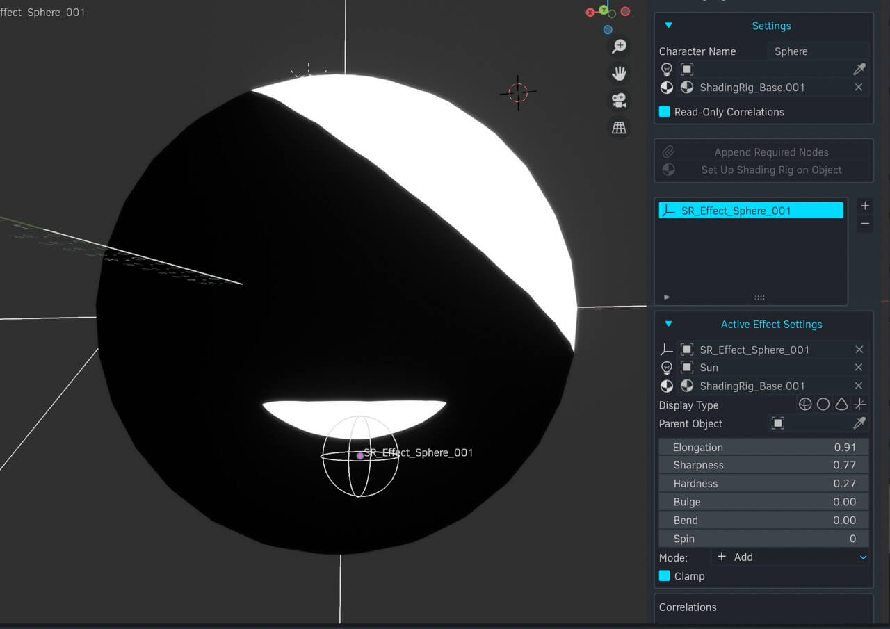 On a rounded form, gives a saucer or lens shaped curve with a flat top.
{kind=link}
Leaf
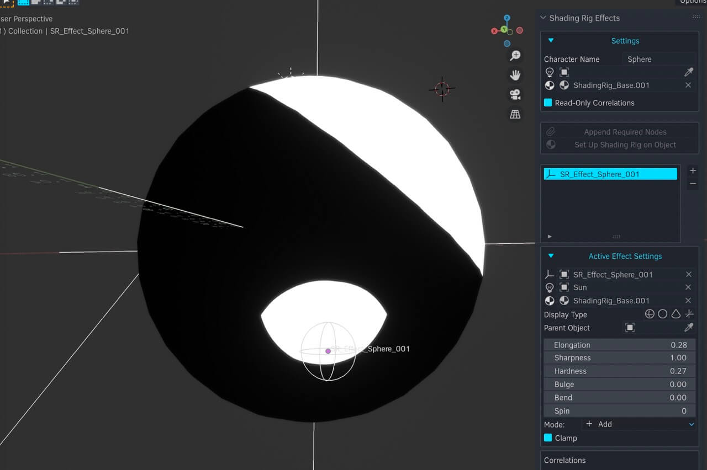 A pointed oval.
{kind=link}
Worm
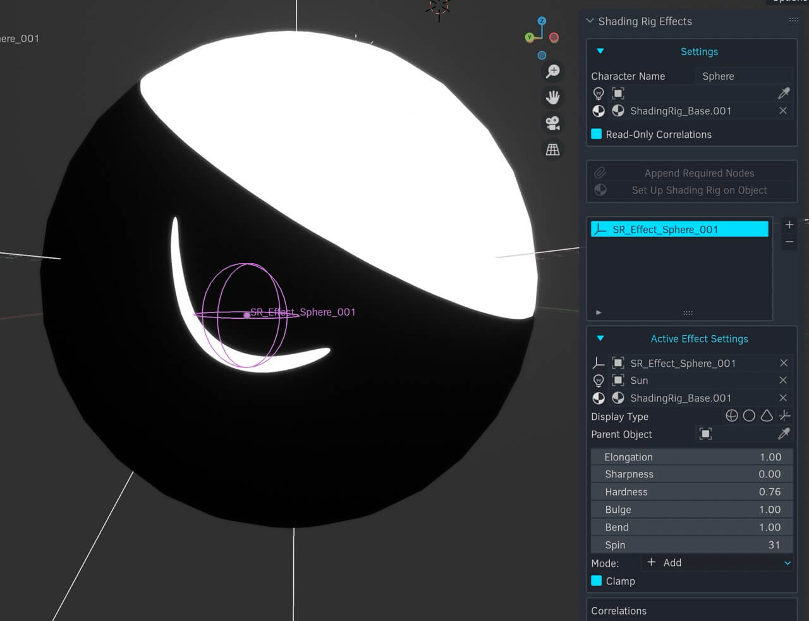 A thin bent line with rounded corners. The thickness stays consistent, unlike the Crescent preset, which arcs out from the corners.
{kind=link}
Crescent
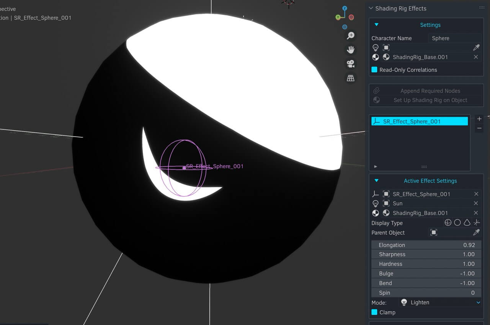 A crescent with sharp corners- the subtraction of overlapping circles.
{kind=link}
Capsule
{kind=link}
Triangle
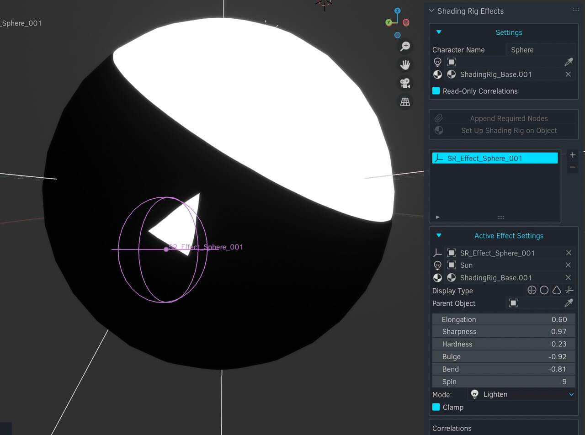 This makes a triangle under some circumstances but not all. Tweak as needed.
{kind=link}
Parabola
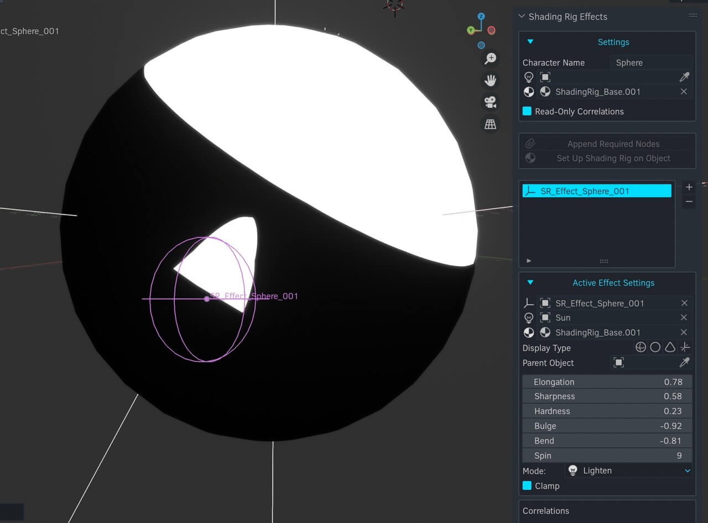 Not a true parabola, rather a triangle with curved corners.
{kind=link}
Butte
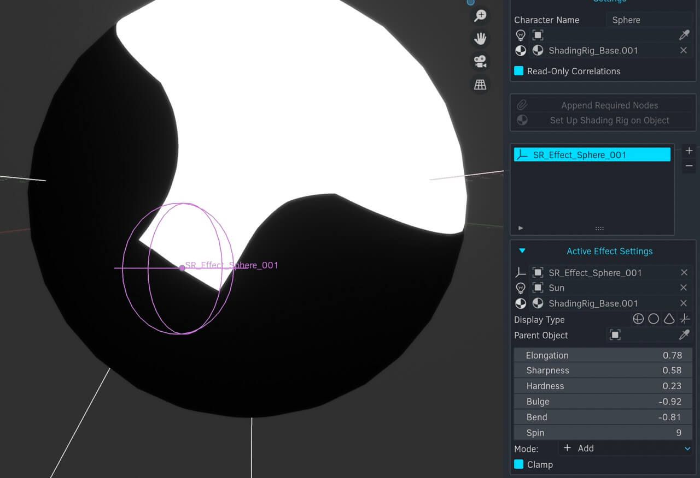 A square extrusion that only works near diffuse lighting or another Effect.
{kind=link}
Expanded Effects
While I've built in these parameters, you can easily add more with additional nodes in your shader tree. Before adding more nodes, make sure you've experimented to make sure you can't get what you need with existing parameters. Extra nodes won't be appended over from scene to scene- only the default parameters can be moved from scene to scene. You'd need to recreate the extra nodes in your other scene.
Effect Settings
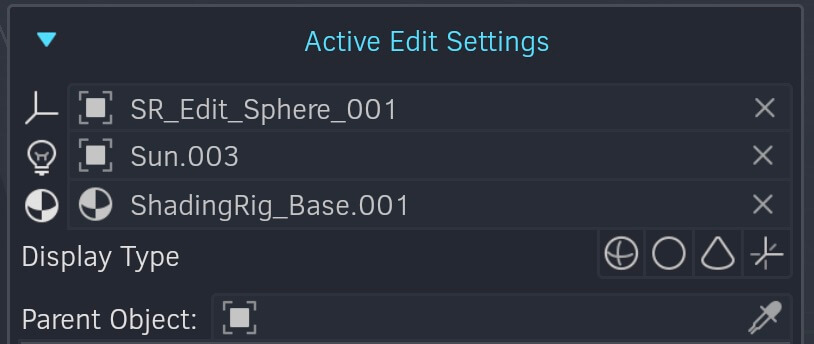 The first three fields are for the empty object, light object, and affected material.
{kind=link}
Empty Object
Here you can change the empty object that the Effect uses. There's not generally a reason why you would do this, but you can.
Light Object
An Effect is tied to the rotation of one Light. If a specific light is not set, this field will automatically fill with the default light set in the Settings sub-panel. If you set a specific light, the Effect will instead respond to that light's rotation.
Note
You don't technically have to add a light object- if you don't, your Effect will remain statically positioned and rotated, and you won't be able to add correspondences. I'm not sure why this would be useful, but there may be a use case I haven't considered. Regardless, I recommend adding a light object even if you want a static Effect, in case you change your mind later.
Material
An Effect affects one Material. This way, you can have multiple materials affected by Effects.
Warning
You probably should avoid changing this unless you have a specific reason to do so. The better workflow is to Set Up Shading Rig on Object, which will automatically set the material for you. However, if you need multiple effected materials per object, this will be useful.
Note that if you change the material, you need to re-attach the Effect to the material. Click Add Effect to Material to do this.
Display Type
This sets the viewport display shape of the Effect's empty. This will not affect the shape of the empty in any way — it is just a way to help visually distinguish between different Effects.
Parent Object
In order for an Effect to properly work on a character, it needs to track the character's rotation and position. I've provided the functionality to do this without breaking Correlations here — just set the Parent Object to the character's object.
Warning
Please don't parent an Effect directly to something — it won't work and you will be sad. Use the Parent Object field to set up this relationship exclusively.
Renaming an Effect
You can double-click on an Effect in the Effects list to rename it.
Removing an Effect
Click the - button while an Effect is selected in the Effects list to remove it.